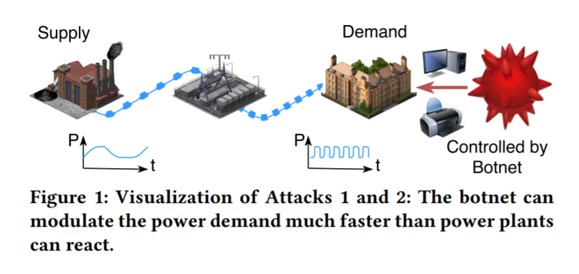
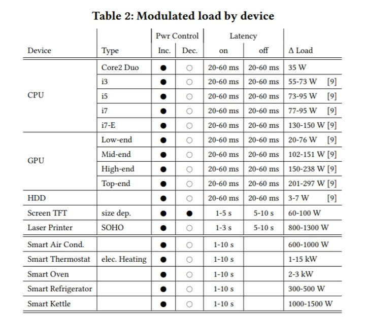

Cyber-Attacks and the Protection of the Electrical Power Grid
29 October 2020
By Joshua Doucet
Introduction
Electrical power grids are considered critical infrastructure since most people in urban areas rely on these systems as a part of their daily lives. Without a reliable power grid infrastructure, the water and food supply, transportation sector, medical aid, and communications infrastructures could break down resulting in a catastrophic event. To keep the grid online, energy producers must constantly maintain a balance of electrical supply and demand while ensuring that the control systems are not compromised by determined attackers (Dabrowski et al.). The integration of computing and communications equipment with electrical power grid control systems has led to more vulnerabilities in cyberspace that can cause disruptions in the transmission of electrical power. A determined attacker can exploit these vulnerabilities which can result in a loss of power for many people. Once again, electrical grid attack events are catastrophic because modern societies rely on these infrastructures to keep the economy and other live saving infrastructure online (Sun et al.). Robert Lee, CEO of a security firm called Dragos, says that even though the probability of an attacker being able to execute a disruptive electric-grid attack is low in the United States, people should still be concerned of electrical grid disruptions, and governments should be taking actions to prevent such events (Larson).
This piece aims to discuss the vulnerabilities of the power grid, and how attackers can compromise electrical infrastructures. Furthermore, this paper discusses some of the precautions, procedures, and technologies that are in place to prevent cyber-attacks on the grid. Although it may be difficult to compromise the grid, it is not impenetrable. There have been several instances of determined attackers causing electrical grid disruptions, and because of this it is important that the security of the grid continues to improve.
Attacking the Grid and Cyberspace Vulnerabilities
Electrical Grid Vulnerabilities
Industrial control systems (ICS) found in electrical power infrastructure combined with computer networking systems create many vulnerabilities to the power grid. Three vulnerabilities worth mentioning are related to ICS remote connectivity, login phishing attempts, and a false demand of electricity coordinated by a botnet of networked computing devices.
To begin, a remote internet connection to electrical power systems allow operators to monitor and perform energy operations from remote locations via integrated IT systems that have become more common in facilities that produce electricity. This ability to access energy facilities remotely provides determined attackers an opportunity to cause power grid disruptions (Sun et al.). This could allow malware such as CrashOverride to infiltrate the power grid network and cause service interruptions. CrashOverride targets the transmission site of electricity that is in-between the source of electricity and the buildings that need it (Larson). CrashOverride is discussed in more detail later.
Another grid vulnerability is related to phishing attempts that try to steal the login credentials of employees who work in operations or administration at electrical power plant facilities. The FBI and DHS acknowledge that attackers use phishing techniques where emails are sent from legitimate looking email addresses that contain malicious attachments or links. An attachment may for example look like a standard resume for a job applicant, but the file may contain links to malicious software that could log usernames and passwords needed to access energy grid computer systems (Nakashima).
The third vulnerability is related to a false demand of electricity need. Batteries are expensive and can be an inefficient way of storing and delivering electricity. Thus, power plants must supply electricity at the same level of demand that it is needed. Electricity producers rely on sophisticated models to reliably forecast power demand so that it can be matched with the appropriate electrical supply (Dabrowski et al.). Unfortunately, a botnet of “zombie” computers can be used to alter the electrical grid demand by increasing the power that the botnet machines need by over utilizing the CPU, GPU, hard disks, screen brightness and usage of laser printers through a coordinated effort via connection to the internet (Dabrowski et al.). Computer devices that can be affected by such a botnet include desktops, workstations, servers, smartphones, tablets, TVs, thermostats, refrigerators, and nearly any internet-of-things (IoT) device connected to the internet. Large spikes in electricity demand can send a grid into an unstable state which may trigger more power plants to come online. Similarly, under consumption can cause load shedding that can cause the disconnection of power plants and transmission lines. The power grid supply infrastructures react much slower than the demands created by information technology (Dabrowski et al.).
The study titled “Grid Shock: Coordinated Load-Changing Attacks on Power Grids: The Non-Smart Power Grid is Vulnerable to Cyber Attacks as Well” by Dabrowski et al, estimates that 2.5 to 9.8 million computer infections could potentially be sufficient to cause disruptions in the European electrical grid. Similar attacks could be coordinated in other countries that rely on an alternating current AC power grid such as the US. The study focuses on the effects of such an attack on the synchronous grid of Continental Europe that spans 23 countries. A visual depiction of the scenario is pictured below.
(Dabrowski et al.)
Power grids often operate at the national or continental level, and the frequencies that electrical generators operate at must be synchronized, because minor frequency deviations between generators can result in short-circuits which can lead to fires and physical destruction (Dabrowski et al.). The coordinated botnet of machine can shift these frequencies out of equilibrium by increasing or decreasing the power consumption of the botnet faster than electrical producers can react, thus triggering load shedding. The table below shows the electrical power load of common devices connected to the internet that could be compromised by a botnet. Targeting devices with higher power consumption would increase the effect that the botnet would have on the electrical grid (Dabrowski et al.).
(Dabrowski et al.)
Overall, the study found that an attack such as this would require a botnet of approximately 2.5 to 9.8 million devices connected to the internet that would result in 4,500 MW of additional power load which may be sufficient to disrupt and destabilize the electrical grid system by triggering load shedding In the European continental synchronous grid area (Dabrowski et al.). The same methodology could be applied to the US electrical grid resulting in a catastrophic event; thus, it should merit concern by those tasked with protecting the electrical grid and cyberspace in the US.
Attacking the Grid
Any determined attacker seeking to disrupt the electrical grid must overcome three main hurdles. A successful attack includes breaching a power facility’s corporate network, gaining operational grid access, and planning a coordinated attack (Greenberg). A network breach occurs when an attacker gains access to corporate email accounts, web browsers, and/or web servers. In some instances, attackers can gain intel from these networks that give them knowledge of how to gain operational access to the electrical control systems (Greenberg). Operational systems for industrial control systems (ICS) are more complicated than standard networks that exists in nearly every modern corporation around the world. It is more difficult to gain access to ICS operations than to access the corporate networks surrounding them. Ideally operational and corporate administration networks should be “air-gapped” (i.e. not connected), but this is not always true, since certain power plant operations may need to be monitored via a remote network connection. It is not impossible to breach operational systems, but an attacker will be faced with a large learning curve in understanding how the specialized and sophisticated computer systems operate (Greenberg). Once an attacker gains access to ICS operations, they must coordinate an attack. Gaining access to these operations and understanding how to use them are very different challenges. Furthermore, attackers may need to alter safety procedures in the ICS software that are executed when an attempt is made to turn off power breakers, and the attackers may also need to be physically present in the facility to cause a disruption to the power grid depending on how the facilities infrastructure is built (Greenberg).
There are many exploits and vulnerabilities in any computational system, and the electrical power grid is no exception. As mentioned three vulnerabilities of concern include remote connectivity of grid systems, phishing attempts, and an inflated demand of electricity caused by botnets of compromised computing devices. The electrical grid infrastructure is well defended but it is not impenetrable. Determined attackers can gain access and cause service disruptions by breeching an electrical facility’s network, gaining ICS operational access, and coordinating an attack.
Past instances of cyber attacks
Although uncommon, attacks on electrical power grid infrastructure have occurred in recent years. In December 2015, a wide area power outage in Ukraine resulted in the loss of power for 225,000 customers (Sun et al.). The outage was the result of malware installation that came from email phishing attempts months prior. In that same year the US Department of Energy (DoE) reported that at least 46 cyber-attack incidents occurred in the energy sector; however, they claim that the actual number of incidents was higher than what was reported (Sun et al.).
Following this instance, a piece of Russian malware dubbed CrashOverride was deployed and affected an energy facility in Ukraine in December 2016. This malware could be modified to affect US power grid systems in the future as well (Nakashima). According to the former NSA employee and CEO of a Dragos, Robert W. Lee says that CrashOverride is malware that leverages legitimate power grid operations to cause disruptions rather than looking for system vulnerabilities and exploits (Todros). Lee further notes that the CrashOverride malware is scalable and can be applied to other energy infrastructure around the world, because once it is in inside control systems it learns how it works, and then uses that information to cause disruptions (Todros).
Attacks on the grid occurred again in 2017. Attackers penetrated computing systems at nearly a dozen nuclear power plants in the US by obtaining network login usernames and passwords. The NSA suspects that the intrusion was initiated by the Russian spy group FSB who appeared to be targeting the energy companies. This instance of cyber intrusion did not affect nuclear operations but gave attackers access to administration and business networks that contain personnel records of employees at the facilities (Nakashima). Wolf Creek nuclear facility in Kansas was one of the facilities affected by this attack. Employee login credentials were stolen, but the nuclear operations remained unaffected since it was isolated from the Wolf Creek bussiness systems (Larson). This is an example of least-privilege in action. These facilities were following best practice when it comes to cyber security. Access to one network should not grant access to another type of network. Furthermore, nuclear operation and control systems should be isolated from the outer internet whenever possible to prevent an offsite attack (Nakashima).
Although uncommon, these three attack instances on electrical grids around the world should serve as a reminder that the electrical grid is vulnerable, and the possibility of power disruptions are real. DHS agencies and security firms alike need to continuously improve and be prepared for more attacks in the future by evaluating the current grid infrastructure, identifying security gaps, prioritizing, and planning enhancements, and implementing those plans to safeguard the nations electrical infrastructure.
Preventing Attacks
A few of the tools used to prevent cyber-attacks on the electrical grid include security frameworks, firewalls, cryptographic encryption, anomaly detection systems, artificial intelligence, and employee security training.
Firewalls are used to reduce unauthorized access to electrical energy infrastructure systems. They are installed to filter incoming network traffic by discarding network packets that come from questionable sources. Unfortunately, large scale corporate firewalls can get complex due to the large number of network rules needed to properly secure a network with many online assets (Sun et al.). Unfortunately, firewalls cannot stop packets that are spoofed, that is packets that are sent from one address, but actually identify as being sent from another address.
Messages sent to and from industrial control systems found in energy facilities must also utilize cryptography to encrypt and hide the contents of messages being sent to and from facilities. Cryptography can prevent unintended messages from being delivered to the ICS of the energy facility. Similarly, cryptography can prevent an attacker from intercepting data sent out of the facility (Sun et al.).
Anomaly Detection Systems (ADS) and Intrusion Detection Systems (IDS) are critical in the detection of a compromised power grid. ADSs are pieces of software that detect unusual patterns in energy usage or unusual patterns in ICS operations as well as the network traffic associated with them. IDSs are software that attempt to detect when a system has been accessed by an unauthorized individual (Sun et al.).
Machine learning is another tool that can be trained and used to detect attacks on electrical power infrastructure (Wang et al.). The software can be trained using historical electrical usage data and ICS logs to determine if an attack on the grid is happening (Wang et al.). However, one downside of using machine learning for this purpose is the high computational cost of analyzing large amounts of electrical usage data. As data points increase, the computation time needed for the machine learning algorithms increases exponentially (Wang et al.).
Lastly, proper security training for electrical infrastructure employees is paramount to securing the electrical power grid. The security systems in place are only as secure as its weakest link. Proper training for handling sensitive information is key to any security plan.
Conclusion
In summary, electric power grids are critical infrastructure that act as a backbone supporting other critical infrastructures such as cyberspace, financial markets, medical aid, and the food and water supply. Disruptive attacks on electrical grid infrastructure have and will continue to result in catastrophic events; therefore, it is crucial that these electrical systems are thoroughly protected. Although systems such as electrical grids can never be fully secured, the systems must have a well thought out plan to a quick recovery. Electrical power grid attacks have occurred in the past and will most certainly continue to occur in the future. To mitigate risk and to protect critical infrastructure from catastrophic events, power grid companies must analyze their stance on security and utilize tools available to them such as, firewalls, cryptography, machine learning, anomaly detection systems, employee security training, and security frameworks such as the Electricity Subsector Cybersecurity Capability Maturity Model (ES-C2M2).
Works Cited
- Dabrowski, Adrian, Johanna Ullrich, and Edgar Weippl. Grid Shock: Coordinated Load-Changing Attacks on Power Grids: The Non-Smart Power Grid is Vulnerable to Cyber Attacks as Well, ACM, 2017, doi:10.1145/3134600.3134639.
- Greenberg, Andy. “How Power Grid Hacks Work, and When You Should Panic.” Wired, 13 Oct. 2017, www.wired.com/story/hacking-a-power-grid-in-three-not-so-easy-steps/.
- Larson, Selena. “How a Hacker Could Take down the Electric Grid.” CNNMoney, Cable News Network, 28 July 2017, https://money.cnn.com/2017/07/28/technology/future/crashoverride-black-hat-blackouts-energy-grid/index.html
- Nakashima, Ellen. “U.S. Officials Say Russian Government Hackers Have Penetrated Energy and Nuclear Company Business Networks.” The Washington Post, WP Company, 8 July 2017, www.washingtonpost.com/world/national-security/us-officials-say-russian-government-hackers-have-penetrated-energy-and-nuclear-company-business-networks/2017/07/08/bbfde9a2-638b-11e7-8adc-fea80e32bf47_story.html.
- Sun, Chih-Che, et al. "Cyber Security of a Power Grid: State-of-the-Art." International Journal of Electrical Power & Energy Systems, vol. 99, no. C, 2018, pp. 45-56.
- Todros, Monica. “CRASHOVERRIDE: The Malware That Attacks Power Grids.” Recorded Future, 10 Jan. 2018, www.recordedfuture.com/crashoverride-malware-overview/.
- Wang, Defu, et al. "Detection of Power Grid Disturbances and Cyber-Attacks Based on Machine Learning." Journal of Information Security and Applications, vol. 46, 2019, pp. 42-52.